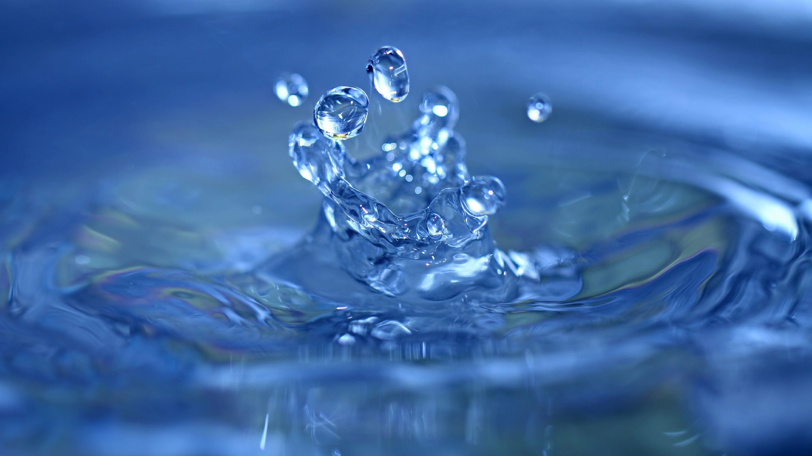
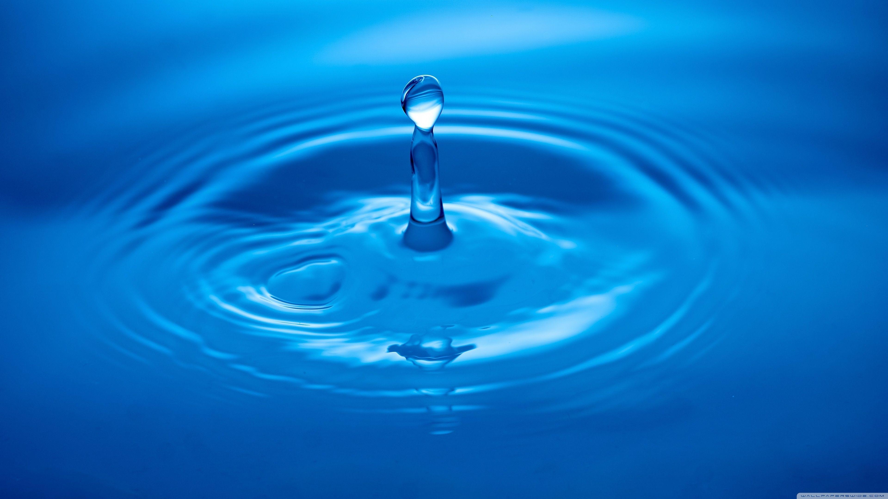
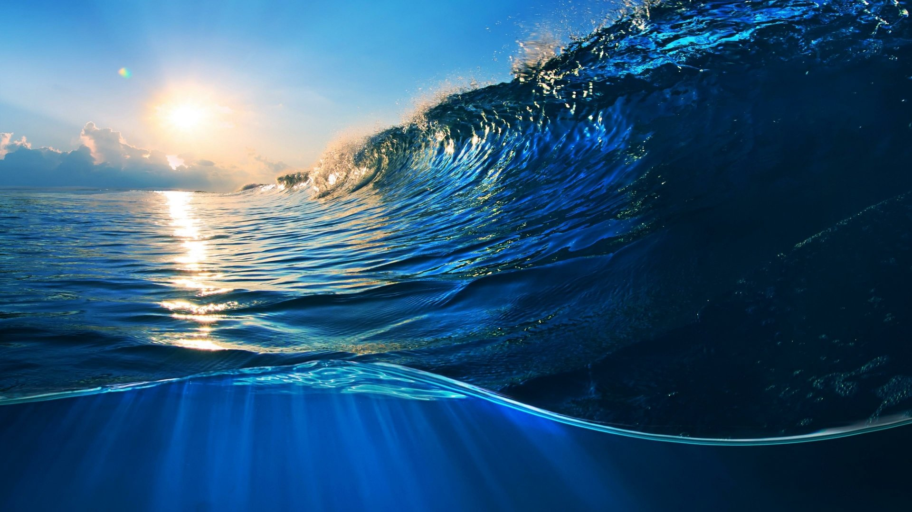
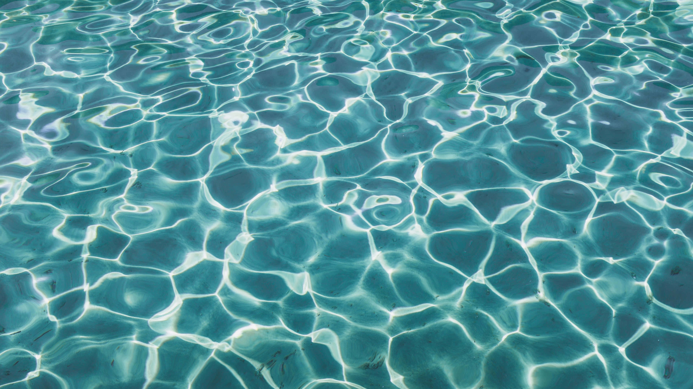

Sophia Larforteza
Sophia Larfoteza é uma cantora filipino-amaricana e líder do grupo KATSEYE. Ela se destaca pela sua voz, carisma e liderança no grupo.
=======
A Sede Invisível dos Algoritmos
Todo modelo de inteligência artificial nasce dentro de um data center, e data centers têm sede. Os servidores esquentam ao processar bilhões de cálculos, e para evitar o superaquecimento, empresas de tecnologia usam grandes volumes de água em sistemas de resfriamento. Ou seja: por trás de uma simples pergunta feita a uma IA existe um consumo de água que quase ninguém enxerga.
>>>>>>> 6f2b0bb19f203f1b164eb5a2534a54dafea60ad4 Saiba mais
Lara Raj ⊹ ࣪ ˖
Lara Raj é uma cantora norte-americana de ascendencia indiana e é a vocalista principal do KATSEYE. Ela é conhecida por sua voz marcante e pela representação da cultura sul-asiatica no grupo.
=======
O Custo Hídrico de um Clique
Manter a internet funcionando exige energia, e gerar energia também pode exigir água, seja em usinas hidrelétricas, termelétricas ou nucleares. Por isso, grandes empresas de tecnologia têm investido em energia limpa (solar e eólica, por exemplo) para reduzir esse custo hídrico indireto e tornar a nuvem digital mais sustentável.
>>>>>>> 6f2b0bb19f203f1b164eb5a2534a54dafea60ad4 Saiba mais
Daniela Avanzini ⋆˚࿔ ༄
Daniela Avanzini é uma cantora norte-americana de ascedencia venezuelana e cubana e é a dançarina principal do KATSEYE.
=======
Energia Limpa e o Ciclo da Água
O sol evapora a água dos oceanos, que forma nuvens, cai como chuva e alimenta os rios usados pelas hidrelétricas. Energias limpas como a solar e a eólica não interrompem esse ciclo natural, ao contrário de fontes que poluem o ar e alteram o clima. Cuidar da energia que usamos é também cuidar do ciclo da água que sustenta a vida.
>>>>>>> 6f2b0bb19f203f1b164eb5a2534a54dafea60ad4 Saiba mais
Megan Skiendiel
A Inteligencia Artificial ajuda a economizar agua, dectetar vazamentos e melhorar a gestão dos recursos hidricos.
Saiba maisInteligência Artificial a Serviço dos Rios
Se a tecnologia consome água, ela também pode ajudar a protegê-la. Sensores e modelos de IA já são usados para prever enchentes, detectar vazamentos em redes de abastecimento e monitorar a qualidade dos rios em tempo real, permitindo que problemas sejam identificados antes de se tornarem desastres.
Saiba mais
O Que Cada Um Pode Fazer
Diminuir banhos longos, fechar a torneira ao escovar os dentes e pensar antes de fazer buscas ou pedidos desnecessários a uma IA são gestos pequenos, mas que somados fazem diferença. Assim como cada gota forma o oceano, cada escolha consciente ajuda a preservar a água do planeta.
Saiba mais